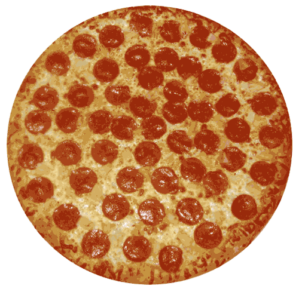

Ιταλική κουζίνα... Η ΠΙΤΣΑ
- Ενδεικτική Τιμή: 15$
- Κέντρο δηλητηριάσεων:0712181028
Εκτέλεση:Βάζουμε σε ένα μεγάλο μπολ το νεράκι. Προσθέτουμε τη μαγιά, το αλάτι, τη ζάχαρη και ανακατεύουμε με ένα μεγάλο κουτάλι, μέχρι να διαλυθούν στο νερό τα υλικά. Προσθέτουμε τα 500 γρ. αλεύρι και ανακατεύουμε όταν γίνει σαν ζύμη, προσθέτουμε το ελαιόλαδο και το υπόλοιπο αλεύρι και ζυμώνουμε μέχρι να ανακατευθούν καλά τα υλικά.Στρώνουμε σε ενα πάγκο λίγο αλευράκι και βάζουμε το ζυμάρι μας που το έχουμε κάνει στρογγυλό και ρίχνουμε από πάνω ακόμα λίγο αλεύρι για να μας βοηθήσει να σχηματίσουμε την πίτσα.
Στη συνέχεια με τις άκρες των καρπών των χεριών μας από μέσα προς τα έξω και κυκλικά "ανοίγουμε" το ζυμάρι ΧΩΡΙΣ να ακουμπήσουμε το στεφανάκι που φτιάξαμε προηγουμένως. Προσέχουμε να ειναι όλη η επιφάνεια ίσια χωρις το ζυμάρι να είναι αλλού πιο παχύ και αλλού λεπτό. Το κάνουμε ομοιόμορφο, και γύρω το στεφανάκι. Έπειτα μεταφέρουμε τη ζύμη μας σε μια λαδόκολλα. Σε ένα σκεύος βάζουμε τον πολτό ντομάτας και τη ρίγανη (προαιρετικά μια πρέζα αλάτι και λίγο πιπεράκι φρεσκοτριμμένο) και ανακατεύουμε. Κόβουμε το κρεμμύδι ροδέλες και βάζουμε ελάχιστο τυράκι.
Ψήνουμε σε προθερμασμένο φούρνο στη δεύτερη σκάλα από κάτω στους 200-215 βαθμούς, περίπου για 20-25 λεπτά, μέχρι να πάρει το τυράκι και το ζυμάρι ένα όμορφο στο μάτι χρώμα.
Υλικά
- 350 ml νεράκι
- 530 γρ. αλεύρι μαλακό λευκό + 30-50 γρ. για το σχηματισμό της πίτσας
- 2 κουτ. σούπας ελαιόλαδο
- 1 κουτ. γλυκού ζάχαρη
- 1/2 κουτ. γλυκού αλάτι
- 1 φακελάκι σκόνη μαγιά ξερή (7 γρ.)
- 170 γρ. ντομάτα πολτό
- 1 κουτ. σούπας ρίγανη
- 1/2 κουτ. σούπας φρεσκοτριμμένο πιπέρι της αρεσκείας μας (προαιρετικά)
- 200 γρ. τριμμένη μοτσαρέλλα ή γκούντα
- 30 γρ. φέτα (πραιρετικά)
- 150-200 γρ. λεπτές φέτες πεπερόνι ή σαλάμι
- 1 μέτριο κρεμμύδι
 |
|
 |